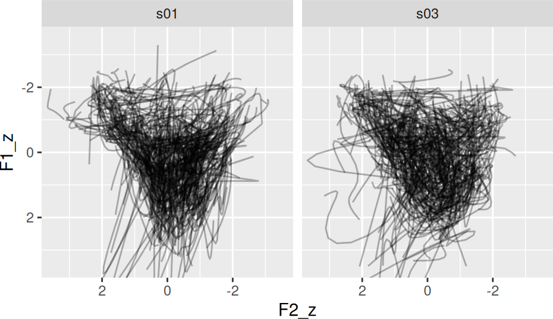

Tidynorm normalizes vowel formant tracks by
- Converting them to Discrete Cosine Transform coefficients.
- Directly normalizing the DCT coefficients.
- Applying the inverse DCT.
Token IDs
In order to do this successfully, each vowel token needs to be uniquely identifiable with a token id, or a token id in combination with other columns. For example, in tidynorm::speaker_tracks the column speaker combined with the column id identifies each unique vowel formant track.
speaker_tracks
#> # A tibble: 19,500 × 9
#> speaker id vowel plt_vclass word t F1 F2 F3
#> <chr> <dbl> <chr> <chr> <chr> <dbl> <dbl> <dbl> <dbl>
#> 1 s01 0 EY eyF OKAY 32.4 754. 2145. 2913.
#> 2 s01 0 EY eyF OKAY 32.4 719. 2155. 2913.
#> 3 s01 0 EY eyF OKAY 32.4 752. 2115. 2914.
#> 4 s01 0 EY eyF OKAY 32.4 762. 2087. 2931.
#> 5 s01 0 EY eyF OKAY 32.4 738. 2088. 2933.
#> 6 s01 0 EY eyF OKAY 32.4 697. 2123. 2936.
#> 7 s01 0 EY eyF OKAY 32.4 640. 2143. 2928.
#> 8 s01 0 EY eyF OKAY 32.5 540. 2153. 2936.
#> 9 s01 0 EY eyF OKAY 32.5 441. 2164. 2936.
#> 10 s01 0 EY eyF OKAY 32.5 497. 2201. 2945.
#> # ℹ 19,490 more rowsFor most normalization procedures, we’ll want to group the data by the speaker column anyway, and in those cases it’s sufficient to pass id to the .token_id_col argument of norm_track_* functions.
We can Lobanov normalize these speakers’ formant tracks with norm_track_lobanov().
normed_tracks <- speaker_tracks |>
norm_track_lobanov(
# identify the formant columns
F1:F3,
# provide speaker grouping
.by = speaker,
# provide token id
.token_id_col = id,
# provide an optional time column
.time_col = t
)
#> Normalization info
#> • normalized with `tidynorm::norm_track_lobanov()`
#> • normalized `F1`, `F2`, and `F3`
#> • normalized values in `F1_z`, `F2_z`, and `F3_z`
#> • token id column: `id`
#> • time column: `t`
#> • grouped by `speaker`
#> • within formant: TRUE
#> • (.formant - mean(.formant, na.rm = T))/sd(.formant, na.rm = T)
normed_tracks |>
ggplot(
aes(F2_z, F1_z)
) +
geom_path(
aes(
group = interaction(speaker, id)
),
alpha = 0.3
) +
scale_y_reverse() +
scale_x_reverse() +
facet_wrap(~speaker) +
coord_cartesian(
xlim = c(3.5, -3.5),
ylim = c(3.5, -3.5)
) +
theme(
aspect.ratio = 1
)